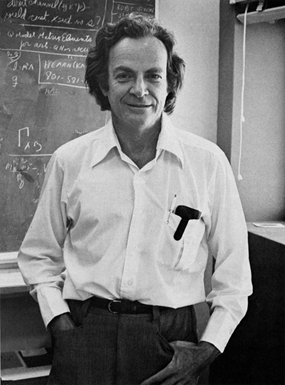

By Richard P. Feynman

Richard P. Feynman is a proferssor
of theoretical physics at California Institute of Technology.
This ariticle is based on his plenary talk presented at CLEO/IQEC Meeting in 1984
This work is a part of an effort to analyze the physical limitations of computers due to the laws of physics. For example, Bennett1 has made a careful study of the free energy dissipation that must accompany com- putation. He found it to be virtually zero. He suggested to me the question of the limitations due to quantum me- chanics and the uncertainty principle. I have found that, aside from the obvious limitation to size if the working parts are to be made of atoms, there is no fundamental limit from these sources either.
We are here considering ideal ma- chines; the effects of small imperfec- tions will be considered later. This study is one of principle; our aim is to exhibit some Hamiltonian for a system which could serve as a computer. We are not concerned with whether we have the most efficient system, nor how we could best implement it.
Since the laws of quantum physics are reversible in time, we shall have to consider computing engines which obey such reversible laws. This prob- lem already occurred to Bennett1, and to Fredkin and Toffoli2, and a great deal of thought has been given to it. Since it may not be familiar to you here, I shall review this, and in doing so, take the opportunity to review, very briefly, the conclusions of Bennett2(3?), for we shall confirm them all when we analyze our quanium system.
It is a result of computer science that a universal computer can be made by a suitably complex network of intercon- nected primitive elements. Following the usual classical analysis we can imag- ine the interconnections to be ideal wires carrying one of two standard volt- ages representing the local 1 and 0. We can take the primitive elements to be just two, NOT and AND (actually just the one element NAND = NOT AND suffices, for if one input is set at 1 the output is the NOT of the other input). They are symbolized in Fig. 1, with the logical values resulting on the outgoing wires, resulting from different com- binations of input wires.
From a logical point of view, we must consider the wires in detail, for in other systems, and our quantum system in particular, we may not have wires as such. We see we really have two more logical primitives, FAN OUT when two wires are connected to one, and EXCHANGE, when wires are crossed. In the usual computer the NOT and NAND primitives are implemented by transistors, possibly as in Fig. 2.
What is the minimum free energy that must be expended to operate an ideal computer made of such primitives? Since, for example, when the AND operates the output line, c’is being determined to be one of two values no matter what it was before the entropy change is \(\ln(2)\) units. This represents a heat gen- eration of \(kT\ln(2)\) at temperature \(T\). For many years it was thought that this rep- resented an absolute minimum to the quantity of heat per primitive step that had to be dissipated in making a cal- culation.
The question is academic at this time. In actual machines we are quite con- cerned with the heat dissipation ques- tion, but the transistor system used ac- tually dissipates about \(10^{10}kT\)! As Bennett3 has pointed out, this arises because to change a wire’s voltage we dump it to ground through a resistance; and to build it up again we feed charge, again through a resistance, to the wire. It could be greatly reduced if energy could be stored in an inductance, or other reactive element.
However, it is apparently very difficult to make inductive elements on silicon wafers with present techniques. Even Nature, in her DNA copying ma- chine, dissipates about 100 \(kT\) per bit copied. Being, at present, so very far from this \(kT\ln(2)\) figure, it seems ridic- ulous to argue that even this is too high and the minimum is really essentially zero. But, we are going to be even more ridiculous later and consider bits writ- ten on one atom instead of the present \(10^{11}\) atoms. Such nonsense is very en- tertaining to professors like me. I hope you will find it interesting and enter- taining also.
What Bennett pointed out was that this former limit was wrong because it is not necessary to use irreversible primitives. Calculations can be done with reversible machines containing only reversible primitives. If this is done the minimum free energy required is independent of the complexity or num- ber of logical steps in the calculation. If anything, it is \(kT\) per bit of the output answer.
But even this, which might be consid- ered the free energy needed to clear the computer for further use, might also be considered as part of what you are going to do with the answer—the information in the result if you transmit it to another point. This is a limit only achieved ideally if you compute with a reversible computer at infinitesimal speed.
We will now describe three reversible primitives that could be used to make a universal machine (Toffoli4). The first is the NOT which evidently loses no in- formation, and is reversible, being re- versed by acting again with NOT. Be- cause the conventional symbol is not symmetrical we shall use an x on the wire instead (see Fig. 3a).
Next is what we shall call the CONTROLLED NOT (see Fig. 3b). There are two entering lines, \(a\) and \(b\) and two exiting lines, \(a^\prime\) and \(b^\prime\). The \(a^\prime\) is always the same as \(a\), which is the control line. If the control is activated \(a = 1\) then the out \(b^\prime\) is the NOT of \(b\). Otherwise \(b\) is unchanged, \(b^\prime = b\). The table of values for input and output is given in Fig. 3. The action is reversed by simply repeating it.
The quantity \(b^\prime\) is really a symmetric function of \(a\) and \(b\) called XOR, the exclusive or; \(a\) or \(b\) but not both. It is likewise the sum modulo two of \(a\) and \(b\), and can be used to compare \(a\) and \(b\), giving a 1 as a signal that they are different. Please notice that this function XOR is itself not reversible. For example, if the value is zero we cannot tell whether it came from \((a, b) = (0,0)\) or from \((1,1)\) but we keep the other line \(a^\prime = a\) to resolve the ambiguity.
We will represent the CONTROLLED NOT by putting a 0 on the control wire, connected with a vertical line to an \(X\) on the wire which is controlled.
This element can also supply us with FAN OUT, for if \(b = 0\) we see that \(a\) is copied onto line \(b^\prime\). This COPY function will be important later on. It also supplies us with EXCHANGE, for three of them used successively on a pair of lines, but with alternate choice for con- tro! line, accomplishes an exchange of the information on the lines (Fig. 3b).
It turns out that combinations of just these two elements alone are insufh- cient to accomplish arbitrary logical functions. Some element involving three lines is necessary. We have chosen what we can call the CONTROLLED CONTROLLED NOT. Here (see Fig. 3c) we have two control lines \(a,b\), which appear unchanged in the output and which change the third line \(c\) to NOT \(c\) only if both lines are activated (\(a = 1\) and \(b = 1\)). Otherwise \(c^\prime = c\). If the third line input \(c\) is set to 0, then evidently it becomes 1 (\(c^\prime= 1\)) only if both \(a\) and \(b\) are 1 and therefore supplies us with the AND function (see Table 1).
Three combinations for \((a,b)\), namely \((0,0), (0,1),\) and \((1,0)\) all give the same value, 0, to the AND \((a,b)\) function so the ambiguity requires two bits to re- solve it. These are kept in the lines a,b in the output so the function can be re- versed (by itself, in fact). The AND func- tion is the carry bit for the sum of \(a\) and \(b\).
From these elements it is known that. any logical circuit can be put together by using them in combination, and in fact, computer science shows that a uni- versal computer can be made. We will illustrate this by a little example. First, of course, as you see in Fig. 4, we can make an adder, by first using the CON TROLLED CONTROLLED NOT and then the CONTROLLED NOT in succes- sion, to produce from \(a\) and \(b\) and 0, as input lines, the original \(a\) on one line, the sum on the second line and the carry on the third.
A more elaborate circuit is a full adder, (see Fig. 5), which takes a carry, c, (from some previous addition), and adds it to the two lines a and 6 and has an additional line, \(d\), with a 0 input. It requires four primitive elements to be put together. Besides this total sum, the total of the three, \(a,b,\) and \(c\) and the carry, we obtain on the other two lines, two pieces of information, One is the \(a\) that we started with, and the other is, some intermediary quantity that we cal- culated on route.
This is typical of these reversible sys- tems, they produce not only what you want in output, but also a certain amount of garbage. In this particular case, and as it turns out in all cases, the - garbage can be arranged to be, in fact, just the input, if we would just add the extra CONTROLLED NOT on the first two lines, as indicated by the dotted lines in Fig. 5, we see that the garbage would become a and b, which were the inputs of at least two of the lines. (We know this circuit can be simplified but we do it this way for illustrative pur- poses.)
In this way, we can by various com- binations produce a general logic unit that transforms \(n\) bits to \(n\) bits in a reversible manner. If the problem you are trying to do is itself reversible, then there might be no extra garbage, but in general, there are some extra lines needed to store up the information which you would need to be able to reverse the operation. In other words, we can make any function that the con- ventional system can, plus garbage. The garbage contains the information you need to reverse the process.
And how much garbage? It turns out in general, that if the output data that you’re looking for has k bits, then start- ing with an input and k bits containing 0, we can produce, as a result, just the input and the output and no further garbage. This is reversible because knowing the output and the input, per- mits you of course, to undo everything. This proposition is always reversible. The argument for this is illustrated in Fig. 6.
Suppose we began with a machine M, which, starting with an input, and some large number of 0’s, produces the de- sired output plus a certain amount of extra data which we call garbage. Now we've seen that the copy operation which can be done by a sequence of CONTROLLED NOT's is possible, so if we have originally an empty register, with the & bits ready for the output, we can, after the processor \(M\) has operated, copy the output from the \(M\) onto this new register.
After that, we can build the opposite machine, the \(M\) in reverse, the reverse machine, which would take this output of \(M\) and garbage and turn it into the input and 0’s. Thus, seen as an overall machine, we would have started with the \(k\) 0’s of the register for the output, and the input, and ended up with those \(k\) 0’s occupied by the output data, and repeat the input data as a final product. The number of 0’s that was originally needed in the M machine in order to hold the garbage, is restored again to 0, and can be considered as internal wires inside the new complete machine (M, M and copy).
Overall, then, we have accomplished what we set out to do, and therefore garbage need never be any greater than a repetition of the input data.
We now go on to consider how such a computer can also be built using the laws of quantum mechanics. We are going to write a Hamiltonian, for a sys- tem of interacting parts, which will be- have in the same way as a large system in serving as a universal computer. Of course the large system also obeys quantum mechanics, but it is in interac- tion with the heat baths and other things that could make it effectively irreversible. What we would like to do is make the computer as small and as simple as possible. Our Hamiltonian will describe in detail all the internal computing ac- tions, but not of course, those interac- tions with the exterior involved in en- tering the input (preparing the initial state) and reading the output.
How small can such a computer be? How small, for instance, can a number be? Of course a number can be repre- sented by bits of 1’s and 0’s. What we're going to do is imagine that we have two- state systems, which we will call “at- oms.” An \(n\) bit number is then repre- sented by a state of a “‘register;” a set of \(n\) two-state systems. ,
Depending upon whether.or not each atom is in one or another of its two states, which we call |l> and l0>, we can of course, represent any number. And the number can be read out of such a register by determining, or measur- ing, in which state each of the atoms are at a given moment. Therefore one bit will be represented by a single atom being in one of two states, the states we will call \(| 1 \rangle\) and \(| 0 \rangle\).
What we will have to do then can be understood by considering an example; the example of a CONTROLLED CON- TROLLED NOT. Let G be some sort of an operation on three atoms \(a, b\) and \(c\), which converts the original state of \(a,b,\) and \(c\) into a new appropriate state, \(a^\prime, b^\prime, c^\prime,\) so that the connection between \(a^\prime, b^\prime,\) and \(c^\prime\) and \(a,b,c,\) are just what we would have expected if \(a,b,\) and \(c\) repre- sented wires, and the \(a^\prime, b^\prime\) and \(c^\prime\) were the output wires of a CONTROLLED CONTROLLED NOT.
It must be appreciated here, that at the moment we are not trying to move the data from one position to another, we are just going to change it. Unlike the situation in the actual wired computer in which the voltages on one wire then go over to voltages on another, what we’re specifically making is some- thing simpler, that the three atoms are in some particular state, and that an operation is performed, which changes the state to new values, \(a^\prime, b^\prime, c^\prime\).
What we would have then is that the state, in the mathematical form \(| a^\prime, b^\prime, c^\prime\rangle\) is simply some operation G operating on \(| a, b, c\rangle\). In quantum me- chanics, state changing operators are linear operators, and so we'll suppose that G is linear. Therefore, \(G\) is a matrix, and the matrix elements of \(G,\) \(G_{a^\prime, b^\prime, c^\prime, a, b, c}\) are all 0 except those in the following table, which are of course 1.
This table is the same table that repre- sents the truth value table for the CON- TROLLED CONTROLLED NOT. It is ap- parent that the operation is reversible, and that can be represented by saying that \(G^*G = 1\), where the * means Hermi- tian adjoint. That is to say \(G\) is a unitary matrix. (In fact \(G\) is also a real matrix \(G^* = G\), but that’s only a special case.) To be more specific, we’re going to write \(A_{ab,c}\). for this special \(G\). We shall use the same matrix A with different numbers of subscripts to represent the other primitive elements.
To take a simple example, the NOT, which would be represented by \(A_a\) is the simple matrix \[ \begin{bmatrix} 0 & 1 \\ 1 & 0 \end{bmatrix} \] This is a 2 X 2 matrix and can be repre- sented in many ways, in different nota- tions, but the particular one we will use to define these is by the method of cre- ation and annihilation operators. Con- sider operating in this case, on a single line a. In order to save alphabets, let us call a the matrix \[ a= \begin{bmatrix} 0 & 1 \\ 0 & 0 \end{bmatrix} \] which annihilates the 1 on atom a and converts it to 0; \(a\) is an operator which converts the state \(| 1\rangle\) to \(| 0\rangle\). But, if the state of the atom were originally \(| 0\rangle\), the operator \(a\) produces the number 0. That is, it doesn’t change the state, it simply produces the numerical value zero when operating on that state. The conjugate of this thing, of course, is: \[ a^*= \begin{bmatrix} 0 & 0 \\ 1 & 0 \end{bmatrix} \] which creates, in the sense that operat- ing on the 0 state, it turns it to the 1 state. In other words, it moves from \(| 0\rangle\) to \(| 1\rangle\). When operating on the \(| 1\rangle\) state, there is no further state above that that you can creale, and therefore it gives it the number zero. Every other operator 2×2 matrix can be represented in terms of these \(a\) and \(a^*\). For example, the product a*a is equal to the matrix \[ a^*a= \begin{bmatrix} 1 & 0 \\ 0 & 0 \end{bmatrix} \] which you might call \(N_a\). Itis 1 when the state is \(| 1\rangle\) and 0 when the state is \(| 0\rangle\). It gives the number that the state of the atom represents. Likewise the product \[ aa^*= \begin{bmatrix} 0 & 0 \\ 0 & 1 \end{bmatrix} \] is \(1-N_a\), and gives 0 for the up-state and 1 for the down-state. We’ll use 1 to represent the diagonal matrix, \[ \begin{bmatrix} 1 & 0 \\ 0 & 1 \end{bmatrix} \] As a consequence of all this, \(aa^* + a^*a = 1\).
It is evident then that our matrix for NOT, the operator that produces NOT, is \(A_a = a + a^*\) and further of course, that’s reversible, \(A_a^*A_a = 1, A_a\) is unitary.
In the same way the matrix \(A_{a,b}\) for the CONTROLLED NOT can be worked out. If you look at the table of values for CONTROLLED NOT you see that it can be written this way: \[ a^*a (b + b^*) + aa^* \] In the first term, the \(a^*a\) selects the condition that the line \(a = 1\) in which case we want \(b + b^*\) the NOT to apply to \(b\). The second term selects the condi- tion that the line \(a\) is 0, in which case we want nothing to happen to \(b\) and the unit matrix on the operators of b is implied. This can also be written as \(1 + a^*a (b + b^* -1)\), the 1 representing all the lines coming through directly, but in the case that \(a\) is 1, we would like to correct that by putting in a NOT instead of leaving the line b unchanged.
The matrix for the CONTROLLED CONTROLLED NOT is: \[ A_{ab,c} = 1 + a^* ab^*b (c+c^*-1) \] as perhaps, you may be able to see.
The next question is what the matrix is for a general logic unit which consists of a sequence of these. As an example, we'll study the case of the full adder which we described before (see Fig. 5). Now we'll have, in the general case, four wires represented by \(a,b,c\) and \(d\); we don’t necessarily have to have \(d\) as 0 in all cases, and we would like to de- scribe how the object operates in gen- eral (if \(d\) is changed to 1 \(d^\prime\) is changed to its NOT). It produces new numbers \(a^\prime, b^\prime, c^\prime\) and \(d^\prime\), and we could imagine with our system that there are four atoms labeled \(a,b,c,d\) in a state labeled \(| a,b,c,d\rangle\) and that a matrix \(M\) operates which changes these same four atoms so that they appear to be in the state \(| a^\prime, b^\prime, c^\prime, d^\prime\rangle\) which is appropriate for this logic unit. That is, if \(|\psi_{IN}\rangle\) repre- sents the incoming state of the four bits \(M\) isa matrix which generates an outgo- ing State \(| \psi_{OUT}\rangle = M | \psi_{IN}\rangle\) for the four bits.
For example, if the input state were the state \(| 1, 0, 1, 0\rangle\) then, as we know, the output state should be \(| 1, 0, 0, 1\rangle\); the first two \(a^\prime, b^\prime\) should be 1,0 for those two first lines come straight through, and the last two \(c^\prime, d^\prime\) should be 0,1 because that represents the sum and carry of the first three, \(a, b, c,\) bits in the first input, as \(d = 0\). Now the matrix \(M\) for the adder can easily be seen as the result of five successive primitive operations, and therefore becomes the matrix product of the five successive matrices repre- senting these primitive objects. \[ M= A_{a,b} A_{b,c} A_{bc,d} A_{a,b} A_{ab,d} \]
The first, which is the one written farthest to the right, is \(A_{ab,d}\) for that represents the CONTROLLED CON- TROLLED NOT in which \(a\) and \(b\) are the CONTROL lines, and the NOT appears on line \(d\). By looking at the diagram in Fig. 5 we can immediately see what the remaining factors in the sequence represent. The last factor, for example, \(A_{a,b}\) means that there’s a CONTROLLED NOT with a CONTROL on line \(a\) and NOT on line \(b\). This matrix will have the unitary property \(M^*M = 1\) since all of the \(A\)’s out of which it is a product are unitary. That is to say \(M\) is a reversal operation, and \(M^*\) is its inverse.
Our general problem, then, is this. Let \(A_1,A_2, A_3, \cdots A_k\) be the succession of operations wanted, in some logical unit, to operate on \(n\) lines. The \(2^n\times 2^n\) matrix \(M\) needed to accomplish the same goal is a product \(A_k...A_3A_2A_1\), where each \(A\) is a simple matrix. How can we generate this \(M\) in a physical way if we know how to make the simpler elements?
In general, in quantum mechanics, the outgoing state at time \(t\), is \(e^{iH_t}\psi_{IN}\) where \(\psi_{IN}\) is the input state, for a system with Hamiltonian \(H\). To try to find, fora given special time \(t\), the Hamiltonian which will produce \(M = e^{iHt}\) when \(M\) is such a product of non-commuting matrices, from some simple property of the matrices themselves, appears to be very difficult.
We realize however, that at any particular time, if we expand the \(e^{iHt}\) out (as \(1 + iHt - H^2t^2/2-..\)) we'll find the oper- ator H operating an innumerable arbitrary number of times, once, twice, three times and so forth, and the total state is generated by a superposition of these possibilities. This suggests that we can solve this problem of the composition of these A’s in the following way.
We add to the \(n\) atoms, which are in our register, an entirely new set of \(k + 1\) atoms, which we'll call ‘‘program counter sites.” Let us call \(q_i\) and \(q_i^*\) the annihilation and creation operators for the program site \(i\) for \(i = 0\) to \(k\), A good thing to think of, as an example, is an electron moving from one empty site to another. If the site i is occupied by the electron, its state is \(| 1\rangle\), while if the site is empty, its state is \(| 0\rangle\).
We write, as our Hamiltonian: \[ \begin{align} H =& \sum_{i=0}^{k-1} q_{i+1}^*q_iA_{i+1} \\ \\ &+ \text{complex conjugate} \\ \\ =& q_1^* q_0 A_1 + q_2^* q_1 A_2 \\ \\ &+ q_3^* q_2 A_3 + \cdots \\ \\ &+ q_0^* q_1 A_1^* + q_1^* q_2 A_2^* \\ \\ &+ q_2^* q_3 A_3^* + \cdots \end{align} \]
The first thing to notice is that if all the program sites are unoccupied, that is all the program atoms are initially in the state 0, nothing happens because every term in the Hamiltonian starts with an annihilation operator and it gives 0 therefore.
The second thing we notice is that if only one or another of the program sites is occupied (in state \(| 1\rangle\)), and the rest are not (state \(| 0\rangle\)), then this is always true. In fact the number of program sites that are in state \(| 1\rangle\) is a conserved quantity. We will suppose that in the operation of this computer, either no sites are occupied (in which case nothing happens) or just one site is occupied. Two or more program sites are never both occupied during normal operation.
Let us start with an initial state where site 0 is occupied, is in the \(| 1\rangle\) state, and all the. others are empty, \(| 0\rangle\) state. If later, at some time, the final site k is found to be in the \(| 1\rangle\) state, (and there- fore all the others in \(| 0\rangle\)) then, we claim, the \(n\) register has been multiplied by the matrix \(M\), which is \(A_k \cdots A_2A_1\) as desired.
Let me explain how this works. Suppose that the register starts in any initial state, \(\psi_{in}\) and that the site, 0, of the program counter is occupied. Then the only term in the entire Hamiltonian that can first operate, as the Hamilto- nian operates in successive times, is the first term, \(q_1^*q_0A_1\). The \(q_0\) will change site number O to an unoccupied site, while \(q_1^*\) will change the site number 0 to an occupied site. Thus the term \(q_1^*q_0\) is a term, which simply moves the occupied site from the location 0 to the location 1. But this is multiplied by the matrix \(A_1\) which operates only on the 12 register atoms, and therefore mul- tiplies the initial state of the » register atoms by \(A_1\).
Now, if the Hamiltonian happens to operate a second time, this first term will produce nothing because \(q_0\) pro- duces 0 on the number 0 site because it is now unoccupied. The term which can operate now is the second term, \(q_2^*q_1A_2\) for that can move the occupied point, which I shall call a “cursor.” The cursor can move from site | to site 2 but the matrix \(A_2\) now operates on the regis- ter, therefore the register has now got the matrix \(A_2A_1\) operating on it.
So, looking at the first line of the Hamiltonian, if that is all there was to it, as the Hamiltonian operates in successive orders, the cursor would move successively from 0 to \(k\), and you would acquire, one after the other, op- erating on the n register atoms, the matrices, \(A\), in the order that we would like to construct the total \(M\).
However, a Hamiltonian must be her- mitian, and therefore the complex con- jugate of all these operators must be present. Suppose that at a given stage, we have gotten the cursor on site num- ber 2, and we have the matrix \(A_2A_1\) operating on the register. Now the \(q_2\) which intends to move that occupation to a new position, needn't come from the first line, but may have come from the second line. It may have come, in fact, from \(q_1^*q_2A_2^*\) which would move the cursor back from the position 2 to the position 1.
But note that when this happens, the operator \(A_2^*\) operates on the register, and therefore the total operator on the register is \(A_2^*A_2A_1\) in this case. But \(A_2^*A_2\) is 1 and therefore the operator is just \(A_1\). Thus we see that when the cursor is returned to the position 1, the net result is that only the operator \(A_1\) has really operated on the register. Thus it is that as the various terms of the Hamiltonian move the cursor forwards and backwards, the \(A\)'s accumulate, or are reduced out again.
At any stage, for example, if the cursor were up to the \(j\) site, the matrices from \(A_1\) to \(A_j\) have operated in succession on the \(n\) register. It does not matter whether or not the cursor on the \(j\) site has arrived there, by going directly from 0 to \(j\), or going further and return- ing, or going back and forth in any pattern whatsoever, as long as it finally arrived at the state \(j\).
Therefore it is true, that if the cursor is found at the site \(k\), we have the net result for the \(n\) register atoms that the matrix \(M\) has operated on their initial state as we desired.
How then could we operate this com- puter? We begin by putting the input bits onto the register, and by putting the cursor to occupy the site 0. We then check at the site \(k\), say, by scattering electrons, that the site \(k\) is empty, or that the site \(k\) has a cursor. The moment we find the cursor at site \(k\) we remove the cursor so that it cannot return down the program line, and then we know that the register contains the output data. We can then measure it at our leisure. Of course, there are external things in- volved in making the measurements, and determining all of this, which are not part of our computer. Surely a com- puter has eventually to be in interaction with the external world, both for putting data in and for taking it out.
Mathematically it turns out that the propagation of the cursor up and down this program line is exactly the same as it would be if the operators A were not in the Hamiltonian. In other words, it represents just the waves which are fa- miliar from the propagation of the tight — binding electrons or spin waves in one dimension, and are very well known. There are waves that travel up and down the line and you can have packets of waves and so forth.
We could improve the action of this computer and make it into a ballistic action in the following way. By making a line of sites in addition to the ones inside, that we are actually using for computing, a line of say, many sites, both before and after. It’s just as though we had values of the index \(i\) for \q_i\), which are less than 0 and greater than \(k\), each of which has no matrix \(A\), just a {| multi- plying there. Then we'd have a longer spin chain, and we could have started, instead of putting a cursor exactly at the beginning site 0, by putting the cursor with different amplitudes on different sites representing an initial incoming spin wave, a wide packet of nearly defi- nite momentum.
This spin wave would then go through the entire computer in a ballis- tic fashion and out the other end into the outside tail that we have added to the line of program sites, and there it would be easier to determine if it is present and to steer it away to some other place, and to capture the cursor. Thus, the logical unit can act in a ballistic way.
This is the essential point and indi- cates, at least to a. computer scientist, that we could make a universal com- puter, because he knows if we can make any logical unit we can make a univer- sal computer. That this could represent a universal computer for which compo- sition of elements and branching can be done, is not entirely obvious unless you have some experience, but I will discuss that to some further extent later.
There are, however, a number of questions that we would like to discuss in more detail such as the question of imperfections.
There are many sources of imperfec- tions in this machine, but the first one we would like to consider is the pos- sibility that the coefficients in the couplings, along the program line, are not exactly equal. The line is so long that in a real calculation little irregular- ities would produce a small probability of scattering, and the waves would not travel exactly ballistically, but would go back and forth.
If the system, for example, is built so that these sites are built on a substrate of ordinary physical atoms, then the thermal vibrations of these atoms would change the couplings a little bit and generate imperfections, (We should even need such noise for with small fixed imperfections there are shallow trapping regions where the cursor may get caught.) Suppose then, that there is a certain probability, say \(p\) per step of calculation (that is, per step of cursor motion, \(i \rightarrow i+1\)) for scattering the cursor momentum until it is random- ized (\(1/p\) is the transport mean free path). We will suppose that the p is fairly small.
Then in a very long calculation, it might take a very long time for the wave {o make its way out the other end, once started at the beginning-—because it has to go back and forth so many times due to the scattering. What one then could do, would be to pull the cursor along the program line with an external force. If the cursor is for example, an electron _ moving from one vacant site to another, this would be just like an electric field trying to pull the electron along a wire, the resistance of which is generated by the imperfection or the probability of scattering. Under these circumstances we can calculate how much energy will be expended by this external force.
This analysis can be made very sim- ply: it is an almost classical analysis of an electron with a mean free path. Ev- ery time the cursor is scattered, I’m going to suppose it is randomly scat- tered forward and backward. In order for the machine to operate, of course, it must be moving forward at a higher probability than it is moving backward. When a scattering occurs therefore, the loss in entropy is the logarithm of the probability that the cursor is moving forward, divided by the probability the cursor was moving backward.
This can be approximated by (the probability forward — the probability backward)/(the probability forward + the probability backward). That was the entropy lost per scattering. More inter- esting in the entropy lost per net calculational step, which is of course, simply p times that number. We can rewrite the entropy cost per calcula- tional step as: \[ p v_D/v_R \] where \(v_D\) is the drift velocity of the cursor and \(v_R\) its random velocity.
Or if you like, it is \(p\) times the mini- mum time that the calculation could be done in, (that is if all the steps were always in the forward direction), di- vided by the actual time allowed.
The free energy loss per step then, is \(kT\times p\times\) the minimum time that the calculation could be done, divided by the actual time that you allow yourself to do it. This is a formula that was first derived by Bennett. The factor \(p\) is a coasting factor, to represent situations in which not every site scatters the cursor randomly, but it has only a small probability to be thus scattered.
It will be appreciated that the energy loss per step is not \(kT\) but is that divided by two factors. One, (\(1/p\)), measures how perfectly you can build the ma- chine and the other is proportional to the length of time that you take to do the calculation. It is very much like a Car- not engine, in which in order to obtain reversibility, one must operate very slowly. For the ideal machine where \(p\) is 0, or where you allow an infinite time, the mean energy loss can be 0.
The uncertainty principle, which usu- ally relates some energy and time un- certainty, is not directly a limitation. What we have in our computer is a device for making a computation, but the time of arrival of the cursor and the measurement of the output register at the other end (in other words, the time it takes in which to complete the cal- culation), is not a definite time. It’s a question of probabilities, and so there is a considerable uncertainty in the time at which a calculation will be done.
There is no loss associated with the uncertainty of cursor energy; at least no loss depending on the number of calcu- lational steps. Of course, if you want to do a ballistic calculation on a perfect machine, some energy would have to be put into the original wave, but that en- ergy, of course, can be removed from the final wave when it comes out of the tail of the program line. All questions associated with the uncertainty of oper- ators and the irreversibility of measure- ments are associated with the input and output functions.
No further limitations are generated by the quantum nature of the computer per \(se\); nothing that is proportional to the number of computational steps.
In a machine such as this, there are very many other problems, due to imperfections. For example, in the registers for holding the data, there will be problems of cross-talk, interactions between one atom and another in that register, or interaction of the atoms in that register directly with things that are happening along the program line, that we didn’t exactly bargain for. In other words, there may be small terms in the Hamiltonian besides the ones we've written.
Until we propose a complete implementation of this, it is very difficult to analyze. At least some of these problems can be remedied in the usual way by techniques such as error correcting codes, and so forth, that have been studied in normal computers. But until we find a specific implementation for this computer, I do not know how to pro- ceed to analyze these effects. However, it appears that they would be very im- portant, in practice. This computer seems to be very delicate and these imperfections may produce consider- able havoc.
The time needed to make a step of calculation depends on the’strength or the energy of the interactions in the terms of the Hamiltonian. If each of the terms in the Hamiltonian is supposed to be of the order of 0.1 electron volts, then it appears that the time for the cursor to make each step, if done in a ballistic fashion, is of the order 6X10745 sec. This does not represent an enor- mous improvement, perhaps only about four orders of magnitude over the present values of the time delays in transistors, and is not much shorter than the very shori times possible to achieve in many optical systems.
We have completed the job we set out to do-—to find some quantum mechani- cal Hamiltonian of a system that could compute, and that is all that we need say. But it is of some interest to deal with some questions about simplifying the implementation. The Hamiltonian that we've written involves terms which can involve a special kind of interaction between five atoms. For example, three of them in the register, for a CON- TROLLED CONTROLLED NOT and two of them as the two adjacent sites in the program counter.
This may be rather complicated to arrange. The question is, can we do it with simpler parts. It turns out, we can indeed. We can do it so that in each interaction there are only three atoms. We're going to start with new primitive elements, instead of the ones we began with. We’ll have the NOT all right, but we have in addition to that simply a “switch” (see also Priese5).
Supposing that we have a term, \(q^*cp+r^*c^* p+\) its complex conjugate in the Hamiltonian (in all cases we'll use letters in the earlier part of the alphabet for register atoms and in the latter part of the alphabet for program sites). See Fig. 7. This is a switch in the sense that, if \(c\) is originally in the \(| 1\rangle\) state, a cursor at \(p\) will move to \(q\), whereas if \(c\) is in the \(| 0\rangle\) state, the cursor at \(p\) will move to \(r\).
During this operation the controlling atom \(c\) changes its state. (It is possible also to write an expression in which the control atom does not change its state, such as \(q^*c^*cp+r^*cc^*p\) and its complex conjugate but, there is no particular advantage or disadvantage to this, and we will take the simpler form.) The complex conjugate reverses this.
If, however, the cursor is at \(q\) and \(c\) is in the state \(| 1\rangle\) (or cursor at \(r, c\) in \(| 0\rangle\)) the \(H\) gives 0, and the cursor gets re- flected back. We shall build all our cir- cuits and choose initial states so that this circumstance will not arise in nor- mal operation, and the ideal ballistic mode will work.
With this switch we can do a number of things. For example, we could pro- duce a CONTROLLED NOT as in Fig. 8. The switch \(a\) controls the operation. Assume the cursor starts at \(s\). If \(a= 1\) the program cursor is carried along the top line, whereas if \(a = 0\) it is carried along the bottom line, in either case terminating finally in the program site \(t\).
In these diagrams, horizontal or verti- cal lines will represent program atoms. The switches are represented by diag- onal lines and in boxes we'll put the other matrices that operate on registers such as the NOT \(b\). To be specific, the Hamiltonian for this little section of a CONTROLLED NOT, thinking of it as starting ar \(s\) and ending at \(t\), is given below: \[ \begin{align} H_c(s,t) =& s_M^*as+t^*a^*t_M \\ \\ &+t_M^*(b+b^*)s_M+s_N^*a^*s \\ \\ &+t^*at_N+t_N^*s_N+c.c. \end{align} \] (The \(c.c.\) means to add the complex conjugate of all the previous terms.)
Although there seem to be two routes here which would possibly produce all kinds of complications characteristic of quantum mechanics, this is not so. If the.entire computer system is started in a definite state for \(a\) by the time the cursor reaches \(s\), the atom \(a\) is still in some definite state (although possibly different from its initial state due to previous computer operations on it). Thus only one of the two routes is taken. The expression may be simplified by omitting the \(s_N^*t_N\) term and putting \(t_N=s_N\).
One need not be concerned in that case, that one route is longer (two cursor sites) than the other (one cursor site) for again there is no interference. No scattering is produced in any case by the insertion into a chain of coupled sites, an extra piece of chain of any number of sites with the same mutual coupling between sites (analogous to matching impedances in transmission lines).
To study these things further, we think of putting pieces together. A piece (see Fig. 9) \(M\) might be represented as a logical unit of interacting parts in which we only represent the first input cursor site as \(s_M\) and the final one at the other end as \(t_M\). All the rest of the program sites that are between \(s_M\) and \(t_M\) are considered internal parts of \(M\), and \(M\) contains its registers. Only \(s_M\) and \(t_M\) are sites that may be coupled externally.
The Hamiltonian for this sub-section we'll call \(H_M\) and we'll identify \(s_M\) and \(t_M\), as the name of the input and output program sites by writing \(H_M(s_M, t_M)\). So therefore \(H_M\) is that part of the Hamilto- nian representing all the atoms in the box and their external start and termi- nator sites.
An especially important and interest- ing case to consider is when the input data (in the regular atoms) comes from one logical unit, and we would like to transfer it to another (see Fig. 10), Suppose that we imagine that the box \(M\) starts with its input register with 0 and its output (which may be the same regis- ter) also with 0. Then we could use it in the following way. We could make a program line, let’s say starting with \(s_M^\prime\) whose first job is to exchange the data in an external register which contains the input, with \(M\)’s input register which at the present time contains 0’s.
Then the first step in our calculation, starting, say, at \(s_M^\prime\), would be to make an exchange with the register inside of \(M\). That puts zero’s into the original input register and puts the input where it belongs inside the box \(M\). The cursor is now at \(s_M\). (We have already explained how exchange can be made of con- trolled NOTs.). Then as the program goes from \(s_M\) to \(t_M\) we find the output now in the box \(M\). Then the output register of M is now cleared as we write the results into some new external reg- ister provided for that purpose, origi- nally containing 0’s. This we do from ty to \(t_M^\prime\) by exchanging data in the empty external register with the \(M\)’s output register.
We can now consider connecting such units in different ways. For exam- ple, the most obvious way is succession. If we want to do first \(M\) and then \(N\) we can connect the terminal side of one to the starting side of the other as in Fig. 11, to produce a new eflective operator \(K\), and the Hamiltonian. then for \(H_K\) is \[ H_K(s_K, t_K) = H_M(s_K, t)+ H_N(t, t_K) \]
The general conditional, if \(a= 1\) do \(M\), but if \(a = 0\) do \(N\), can be made, as in Fig. 12. For this \[ \begin{align} H_{cond}(s_c, t_c) =& (s_M^*as_c+t_c^*a^*t_M \\ \\ &+ s_N^*a^*s_c+t_c^*at_N+c.c.) \\ \\ &+H_M(s_M, t_M) + H_N(s_N, t_N) \end{align} \]
The CONTROLLED NOT is the special case of this with \(M=NOTb\) for which \(H\) is: \[ H_{NOTb}(s,t) = s^*(b+b^*)t + c.c \] and \(N\) is no operation \(s^*t\).
As another example, we can deal with a garbage clearer (previously described in Fig. 6) not by making two machines, a machine and its inverse, but by using the same machine and then sending the data back to the machine in the oppo- site direction, using our switch (see Fig. 13).
Suppose in this system we have a special flag \(f\) which is originally always set to 0. We also suppose we have the input data in an external register, an empty external register available to hold the output, and the machine registers all empty (containing 0's). We come on the starting line \(s\).
The first thing we do is to copy (using CONTROLLED NOT’s) our external inpul into \(M\). Then \(M\) operates, and the cursor goes on the top line in our drawing. It copies the output out of \(M\) into the external output register. \(M\) now contains garbage. Next it changes \(f\) to NOT \(f\), comes down on the other line of the. switch, backs out through \(M\) clearing the garbage and uncopies the input again.
When you copy data and do it again, you reduce one of the registers to 0, the register into which you copied the first time. After the copying, it goes out (since \(f\) is now changed) on the other line where we restore \(f\) to 0 and come out at \(t\). So between \(s\) and \(t\) we have a new piece of equipment, which has the following properties.
When it starts, we have, in a register called IN, the input data. In an external register which we call OUT, we have 0’s. There is an internal flag set at 0, and the box, \(M\), is empty of all data. At the termination of this, at t, the input register still contains the input data, the output register contains the output of the effort of the operator \(M\). \(M\) however, is still empty, and the flag f is reset to 0.
Also important in computer pro- grams is the ability to use the same subroutine several times. Of course, from a logical point of view, that can be done by writing that bit of program over and over again, each time it is to be used, but in a practical computer, it is much better if we could build that sec- tion of the computer which does a par- ticular operation, just once, and use that section again and again.
To show the possibilities, here, first just suppose we have an operation we simply wish to repeat twice in succes- sion (see Fig. 14). We start at s with the flag \(a\) in the condition 0, and thus we come along the line, and the first thing that happens is we change the value of \(a\). Next we do the operation \(M\). Now, because we changed \(a\), instead of com- ing out at the top line where we went in, we come out at the bottom line, which recirculates the program back into changing \(a\) again, it restores it.
This time as we go through \(M\), we come out and we have the a to follow on the upper line, and thus come out at the terminal, \(t\). The Hamiltonian for this is \[ \begin{align} Hy_{MM}(s,t) =& (s_N^* a^* s + s_M^*(a^* + a)s_N \\ \\ &+x^*a^* t_M +s_N^* ax \\ \\ &+ t^*at_M + c.c.) \\ \\ &+ H_M(S_M, t_M) \end{align} \]
Using this switching circuit a number of times, of course, we can repeat an operation several times. For example, using the same idea three times in suc- cession, a nested succession, we can do an operation eight times, by the appa- ratus indicated in Fig. 15. In order to do so, we have three flags, \(a, b,\) and \(c\). It is necessary to have flags when operations are done again for the reason that we must keep track of how many times its done and where we are in the program or we'll never be able to reverse things.
A sub-routine in a normal computer can be used and emptied and used again without any record being kept of what happened. But here we have to keep a record and we do that with flags, of exactly where we are in the cycle of the use of the sub-routine. If the sub- routine is called from a certain place and has to go back to some other place, and another time is called, its origin and final destination are different, we have to know and keep track of where it came from and where it’s supposed to go individually in each case, so more data has to be kept. Using a sub-routine over and over ina reversible machine is only slightly harder than in a general machine. All these considerations appear in papers by Fredkin, Toffoli and Bennett.
It is clear by the use of this switch, and successive uses of such switches in trees, that we would be able to steer data to any point in a memory. A memory would simply be a place where there are registers into which you could copy data and then return the program. The cursor will have to follow the data along. I suppose there must be another set of tree switches set the opposite direction to carry the cursor out again, after copying the data so that the system remains reversible.
In Fig. 16 we show an incremental binary counter (of three bits \(a,b,c\) with \(c\) the most significant bit) which keeps track of how many net times the cursor has passed from \(s\) to \(t\). These few exam- ples should be enough to show that indeed we can construct all computer functions with our SWITCH and NOT. We need not follow this in more detail.
It’s clear from these examples that this quantum machine has: not really used many ‘of the specific qualities of the differential equations of quantum mechanics.
What we have done is only to try to imitate as closely as possible the digital machine of conventional sequential architecture. It is analogous to the use of transistors in conventional machines, where we don’t properly use all the analog continuum of the behavior of transistors, but just try to run them as saturated on or off digital devices so the logical analysis of the system behavior is easier. Furthermore, the system is absolutely sequential — for example, even in the comparison (exclusive or) of two \(k\) bit numbers, we must do each bit successively. What can be done, in these reversible quantum systems, to gain the speed available by concurrent operation has not been studied here.
Although, for theoretical and aca- demic reasons, I have studied complete and reversible systems, if such tiny ma- chines could become practical there is no reason why irreversible and entropy creating interactions cannot be made frequently during the course of opera- tions of the machine.
For example, it might prove wise, ina long calculation, to ensure that the cursor has surely reached some point and cannot be allowed to reverse again from there. Or, it may be found practi- cal to conneet irreversible memory storage (for items less frequently used) to reversible logic or short term revers- ible storage registers, etc. Again, there is nO reason we need to stick to chains of coupled sites for more distant com- munication where wires or light may be easier and faster.
At any rate, it seems that the laws of physics present no barrier to reducing the size of computers until bits are the size of atoms, and quantum behavior holds dominant sway.
I would like to thank T. Toffoli for his help with the references.